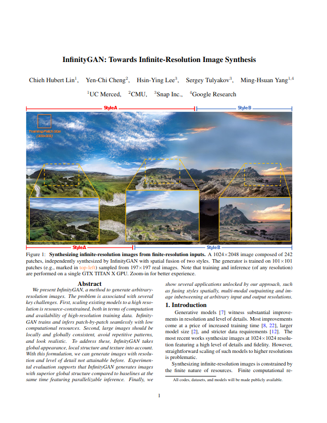
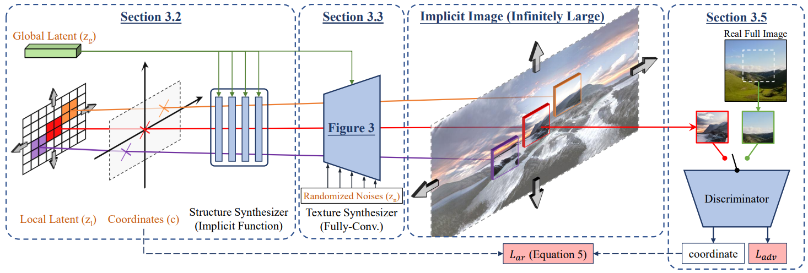
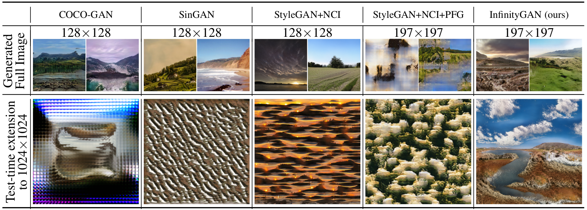
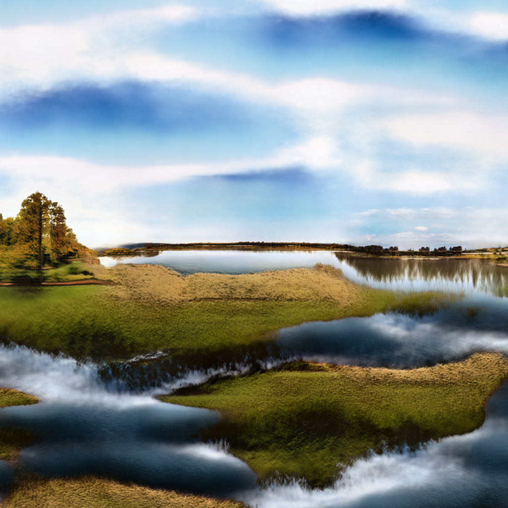
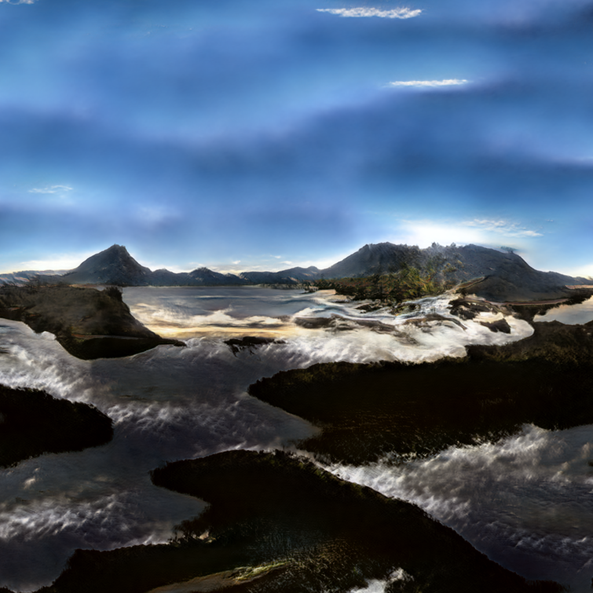
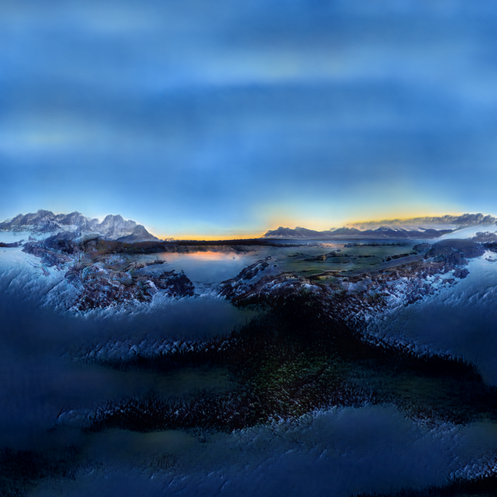
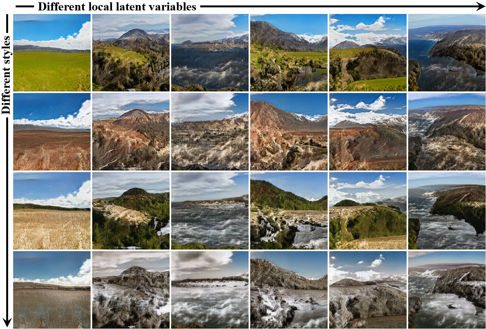
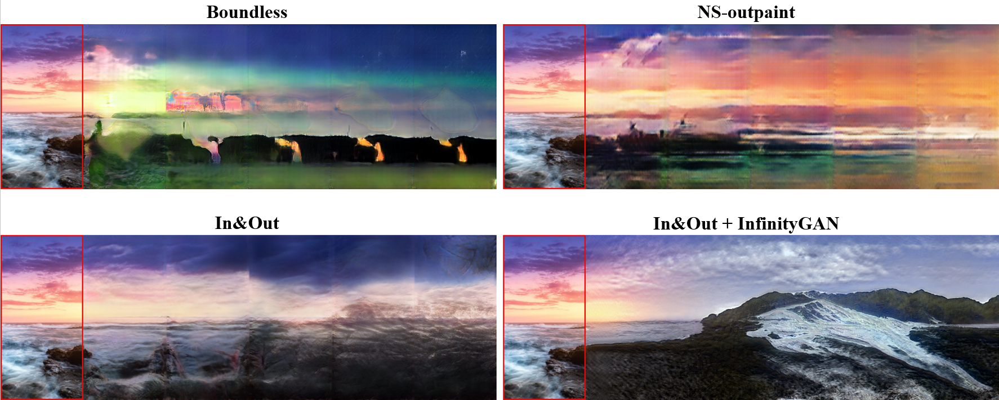
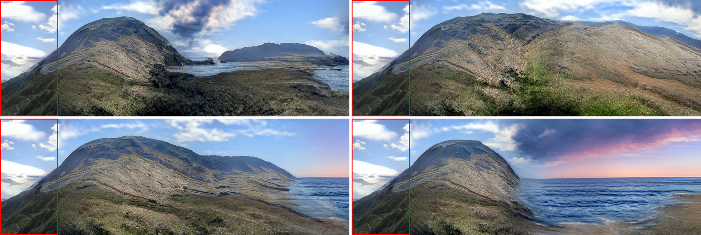
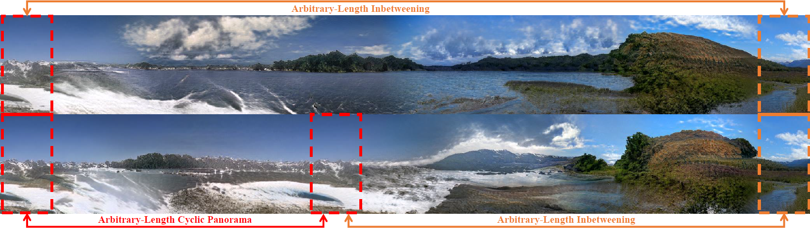

<!--
OuO is the answer to everything.
OuO can perfectly express anything and any mood.
Just believe in OuO.
QuQ
-->

<!DOCTYPE html PUBLIC "-//W3C//DTD HTML 4.01 Transitional//EN" "http://www.w3c.org/TR/1999/REC-html401-19991224/loose.dtd">
<html xml:lang="en" xmlns="http://www.w3.org/1999/xhtml" lang="en">


<head>
<title>InfinityGAN</title>
<meta http-equiv="Content-Type" content="text/html; charset=windows-1252">

<META HTTP-EQUIV="CACHE-CONTROL" CONTENT="NO-CACHE">

<meta property="og:image" content="images/teaser_fb.jpg"/>
<meta property="og:title" content="InfinityGAN: Towards Infinite-Resolution Image Synthesis"/>

<script src="lib.js" type="text/javascript"></script>
<script src="popup.js" type="text/javascript"></script>

<!-- Global site tag (gtag.js) - Google Analytics -->
<script async src="https://www.googletagmanager.com/gtag/js?id=G-3H2WZNYDWT"></script>
<script>
  window.dataLayer = window.dataLayer || [];
  function gtag(){dataLayer.push(arguments);}
  gtag('js', new Date());

  gtag('config', 'G-3H2WZNYDWT');
</script>

<script type="text/javascript">
// redefining default features
var _POPUP_FEATURES = 'width=500,height=300,resizable=1,scrollbars=1,titlebar=1,status=1';
</script>

<!-- PDF reader -->
<script src="https://cdnjs.cloudflare.com/ajax/libs/pdf.js/2.6.347/pdf.min.js" integrity="sha512-Z8CqofpIcnJN80feS2uccz+pXWgZzeKxDsDNMD/dJ6997/LSRY+W4NmEt9acwR+Gt9OHN0kkI1CTianCwoqcjQ==" crossorigin="anonymous"></script>


<!-- Bootstrap -->
<link rel="stylesheet" href="https://maxcdn.bootstrapcdn.com/bootstrap/4.0.0/css/bootstrap.min.css" integrity="sha384-Gn5384xqQ1aoWXA+058RXPxPg6fy4IWvTNh0E263XmFcJlSAwiGgFAW/dAiS6JXm" crossorigin="anonymous">

<script src="https://code.jquery.com/jquery-3.2.1.slim.min.js" integrity="sha384-KJ3o2DKtIkvYIK3UENzmM7KCkRr/rE9/Qpg6aAZGJwFDMVNA/GpGFF93hXpG5KkN" crossorigin="anonymous"></script>
<script src="https://cdnjs.cloudflare.com/ajax/libs/popper.js/1.12.9/umd/popper.min.js" integrity="sha384-ApNbgh9B+Y1QKtv3Rn7W3mgPxhU9K/ScQsAP7hUibX39j7fakFPskvXusvfa0b4Q" crossorigin="anonymous"></script>
<script src="https://maxcdn.bootstrapcdn.com/bootstrap/4.0.0/js/bootstrap.min.js" integrity="sha384-JZR6Spejh4U02d8jOt6vLEHfe/JQGiRRSQQxSfFWpi1MquVdAyjUar5+76PVCmYl" crossorigin="anonymous"></script>

<link media="all" href="glab.css" type="text/css" rel="StyleSheet">
<style type="text/css" media="all">
IMG {
	PADDING-RIGHT: 0px;
	PADDING-LEFT: 0px;
	FLOAT: none;
	PADDING-BOTTOM: 0px;
	PADDING-TOP: 0px
}
BODY {
	TEXT-ALIGN: center
}
h1, h2, .bold {
	font-weight: bold;
	margin-bottom: 20px;
}
h1 {font-size: 30px}
h2 {font-size: 27px}
h3 {font-size: 18px}
h4 {font-size: 15px}

.caption {
	color: var(--caption-color); 
	font-weight: bold;
	/*font-style: italic;*/
	font-size: 15px;
	margin-top: 10px;
	width: 95%;
}

.zoomin, .zoomin:hover {
	cursor: -webkit-zoom-in;
	cursor: zoom-in;
}

.author-names {
	font-size: 20px;
}

.author-names>div, .affiliations>div {
	padding: 0;
}

.affiliations {
	font-size: 14px;
}

.sm-margin {
	margin: 15px auto;
}

.md-margin {
	margin: 45px auto;
}

.lg-margin {
	margin: 90px auto;
}

.xg-margin {
	margin: 120px auto;
}

.section-title {
	text-align: left;
}
.section-title span {
	border-left: 10px solid var(--face-color);
	border-bottom: 1px solid var(--face-color);
	padding: 5px 15px;
}

.citation-content {
	text-align: left;
	word-wrap: break-word;
}
</style>


<script>
	// Force pdf reader always aspect ratio
	$(window).on("ready load resize", function(){
		$(".pdf-reader").each(function(){
			var cur_width = $(this).width();
			var aspect_ratio = parseFloat($(this).attr("hratio"));
			$(this).height(cur_width * aspect_ratio);
		});
	});

	// Borrowed from: https://stackoverflow.com/questions/12697216/bootstrap-carousel-lazy-load
	$(function() {
		$('.carousel.lazy-load').bind('slide.bs.carousel', function (e) {
			var image = $(e.relatedTarget).find('img[data-src]');
			image.attr('src', image.data('src'));
			image.removeAttr('data-src');
		});
	});
</script>

</head>

<body style="border-top: 10px solid var(--face-color); border-bottom: 10px solid var(--face-color);">

<div class="container">
	<h1 class="lg-margin">InfinityGAN: Towards Infinite-Resolution Image Synthesis</h1>
	<div class="row author-names sm-margin">
		<div class="col-5 offset-1   offset-lg-1 col-lg-3">
			<a href="https://hubert0527.github.io/">Chieh&nbsp;Hubert&nbsp;Lin<sup>1</sup></a>
		</div>
		<div class="col-5            col-lg-4">
			<a href="http://vllab.ucmerced.edu/hylee/">Hsin-Ying&nbsp;Lee<sup>2</sup></a>
		</div>
		<div class="col-12           col-lg-3">
			<a href="https://yccyenchicheng.github.io/">Yen-Chi&nbsp;Cheng<sup>3</sup></a>
		</div>
		<div class="col-5 offset-1   offset-lg-2 col-lg-4">
			<a href="http://www.stulyakov.com/">Sergey&nbsp;Tulyakov<sup>2</sup></a>
		</div>
		<div class="col-5            col-lg-4">
			<a href="https://faculty.ucmerced.edu/mhyang/">Ming-Hsuan&nbsp;Yang<sup>1,4</sup></a>
		</div>
	</div>

	<div class="row sm-margin"></div>

	<div class="row affiliations sm-margin">
		<div class="col-3 offset-3   col-lg-2 offset-lg-2">
			<a href="https://www.ucmerced.edu/"><sup>1</sup>UC&nbsp;Merced</a>
		</div>
		<div class="col-3 offset-3   col-lg-2 offset-lg-0">
			<a href="https://research.snap.com/"><sup>2</sup>Snap&nbsp;Research</a>
		</div>
		<div class="col-3            col-lg-2">
			<a href="https://www.cmu.edu/"><sup>3</sup>CMU</a>
		</div>
		<div class="col-3            col-lg-2">
			<a href="https://research.google/"><sup>4</sup>Google&nbsp;Research</a>
		</div>
	</div>

	<div class="row md-margin"></div>

	<div class="row md-margin">
		<div class="offset-1 col-10" style="border-radius: 10px; border: 4px double var(--face-color); padding: 15px">
			<h3 style="margin-bottom: 20px; font-size: 24px; font-weight: bolder; text-decoration: underline;">Under Submission</h3>
			<p style="margin: auto">
				Paper: &nbsp
				<a href="http://bit.ly/COCO-GAN">Arxiv.org (Low resolution)</a> &nbsp | &nbsp
				<a href="https://goo.gl/5HLynv">Google Drive (High resolution)</a> &nbsp | &nbsp
				<a href="https://goo.gl/5HLynv">Supplementary</a>
			</p>
			<p style="margin: auto">
				<a href="http://bit.ly/infinityCodes">Code (PyTorch; Release Upon Publication)</a> 
			</p> 
		</div>
	</div>

	<div class="row">
		<!-- <a href="images/teaser.png" class="zoomin">
			
		</a> -->
		<!-- <iframe class="pdf-reader"
			src="pdf_reader/viewer.html?file=../assets/teaser.pdf"
			width="100%"
			hratio="0.57"
			style="margin-top: 20px; margin-bottom: 40px;">
		</iframe> -->
		<div class="col-12 video-container">
			<iframe width="560" 
				height="315" 
				src="https://www.youtube.com/embed/EngMHoyqkGY"
				title="InfinityGAN video" 
				frameborder="0" 
				allow="accelerometer; clipboard-write; encrypted-media; gyroscope; picture-in-picture" 
				allowfullscreen></iframe>
		</div>
	</div>

	<hr>

	<div class="row">
		<h2 class="bold section-title"><span>Abstract</span></h2>

		<div class="col-12" style="font-size:14px">
			<p align="justify">
				We present InfinityGAN, a method to generate arbitrary-resolution images. 
				The problem is associated with several key challenges. 
				First, scaling existing models to a high resolution is resource-constrained, 
				both in terms of computation and availability of high-resolution training data. 
				InfinityGAN trains and infers patch-by-patch seamlessly with low computational resources.
				Second, large images should be locally and globally consistent, avoid repetitive patterns, 
				and look realistic. To address these, InfinityGAN takes global appearance, local structure 
				and texture into account. With this formulation, we can generate images with resolution and 
				level of detail not attainable before. 
				Experimental evaluation supports that InfinityGAN generates images with superior global 
				structure compared to baselines at the same time featuring parallelizable inference.
				Finally, we show several applications unlocked by our approach, such as fusing styles 
				spatially, multi-modal outpainting and image inbetweening at arbitrary input and output resolutions.
			</p>
		</div>
	</div>

	<div class="row">
		<div class="col-4 my-5 my-lg-0">
			<a href="http://bit.ly/COCO-GAN">
				
			</a>
		</div>
		<div class="col-8 my-xl-5">
			<h3>Paper</h3>
			<p><a>Under Submission</a>, 2021. </p>

			<h3>Code </h3>
			<p><a href='http://bit.ly/infinityCodes'> PyTorch</a></p>

			<h3>Citation</h3>
			<code style="text-align: left; display: block; background-color: #383838; padding: 20px; margin: 0px 20px; color: var(--face-color)">
				@article{lin2021infinity, <br/>
				&nbsp;&nbsp;&nbsp;title={InfinityGAN: Towards Infinite-Resolution Image Synthesis}, <br/>
				&nbsp;&nbsp;&nbsp;author={Lin, Chieh Hubert and Cheng, Yen-Chi and Lee, Hsin-Ying and Tulyakov, Sergey and Yang, Ming-Hsuan}, <br/>
				&nbsp;&nbsp;&nbsp;journal={arXiv preprint arXiv:???}, <br/>
				&nbsp;&nbsp;&nbsp;year={2021} <br/>
				}
			</code>
		</div>
	</div>

	<hr>

	<div class="row">
		<h2 class="bold section-title"><span>Overview of the Method</span></h2>
		<div class="col-12 img-container">
			<a href="assets/pipeline.png" class="zoomin"></a>
		</div>
		<br>
		<div class="col-12">
			<p align="justify">The generator of InfinityGAN consists of two modules, a structure synthesizer based on a neural implicit function, 
				and a fully-convolutional texture synthesizer with all positional information removed (see Figure 3 in the paper). The two networks 
				take four sets of inputs, a global latent variable that defines the holistic appearance of the image, a local latent variable 
				that represents the local and structural variation, a continuous coordinate for learning the neural implicit structure synthesizer, 
				and a set of randomized noises to model fine-grained texture. InfinityGAN synthesizes images of arbitrary resolution by learning 
				spatially extensible representations.</p>
		</div>
	</div>

	<div class="row end-section"></div>
	<hr>

	<div class="row">
		<h2 class="bold section-title"><span>Qualitative Results</span></h2>
		<div class="col-12 img-container">
			<a href="assets/baseline-compare.png" class="zoomin"></a>
		</div>
		<br>
		<div class="col-12 paragraph">
			<p>
				<span class="paragraph-title">Comparison with related methods.</span> &nbsp;
				We show that InfinityGAN can produce more favorable holistic appearances against
				related methods while testing with an extended resolution 1024&#215;1024. (NCI: Non-Constant Input, FCG: Fully-Convolutional Generator).
			</p>
		</div>

		<div class="col-12 paragraph-skip"></div>


		<div id="carouselExampleIndicators" class="carousel slide" data-ride="carousel">
			<ol class="carousel-indicators">
				<li data-target="#carouselExampleIndicators" data-slide-to="0" class="active"></li>
				<li data-target="#carouselExampleIndicators" data-slide-to="1"></li>
				<li data-target="#carouselExampleIndicators" data-slide-to="2"></li>
			</ol>
			<div class="carousel-inner">
				<div class="carousel-item active">
					
					<div class="carousel-caption d-none d-md-block">
						<h5>My Caption Title (1st Image)</h5>
						<p>The whole caption will only show up if the screen is at least medium size.</p>
					</div>
				</div>
				<div class="carousel-item">
					
				</div>
				<div class="carousel-item">
					
				</div>
			</div>
			<a class="carousel-control-prev" href="#carouselExampleIndicators" role="button" data-slide="prev">
				<span class="carousel-control-prev-icon" aria-hidden="true"></span>
				<span class="sr-only">Previous</span>
			</a>
			<a class="carousel-control-next" href="#carouselExampleIndicators" role="button" data-slide="next">
				<span class="carousel-control-next-icon" aria-hidden="true"></span>
				<span class="sr-only">Next</span>
			</a>
		</div>


		<!-- Borrowed from: https://stackoverflow.com/questions/12697216/bootstrap-carousel-lazy-load -->

		<div id="carouselExampleIndicators" class="carousel slide" data-ride="carousel">
			<ol class="carousel-indicators">
			  <li data-target="#carouselExampleIndicators" data-slide-to="0" class="active"></li>
			  <li data-target="#carouselExampleIndicators" data-slide-to="1"></li>
			  <li data-target="#carouselExampleIndicators" data-slide-to="2"></li>
			</ol>
			<div class="carousel-inner">
			  <div class="carousel-item active">
				
			  </div>
			  <div class="carousel-item">
				
			  </div>
			  <div class="carousel-item">
				
			  </div>
			</div>
			<a class="carousel-control-prev" href="#carouselExampleIndicators" role="button" data-slide="prev">
			  <span class="carousel-control-prev-icon" aria-hidden="true"></span>
			  <span class="sr-only">Previous</span>
			</a>
			<a class="carousel-control-next" href="#carouselExampleIndicators" role="button" data-slide="next">
			  <span class="carousel-control-next-icon" aria-hidden="true"></span>
			  <span class="sr-only">Next</span>
			</a>
		  </div>


		<div class="col-12">

			<div id="carousel-more-qual" class="carousel slide lazy-load" data-ride="carousel" data-interval="false">
			<div class="carousel-inner">
				<div class="carousel-item active"></div>
				<div class="carousel-item"></div>
				<div class="carousel-item"></div>
				<div class="carousel-item"></div>
				<div class="carousel-item"></div>
				<div class="carousel-item"></div>
				<div class="carousel-item"></div>
				<div class="carousel-item"></div>
				<div class="carousel-item"></div>
				<div class="carousel-item"></div>
				<div class="carousel-item"></div>
				<div class="carousel-item"></div>
				<div class="carousel-item"></div>
				<div class="carousel-item"></div>
				<div class="carousel-item"></div>
				<div class="carousel-item"></div>
			</div>
			<!-- controls -->
			<ol class="carousel-indicators">
				<li data-target="#carousel-more-qual" data-slide-to="0" class="active"></li>
				<li data-target="#carousel-more-qual" data-slide-to="1"></li>
				<li data-target="#carousel-more-qual" data-slide-to="2"></li>
				<li data-target="#carousel-more-qual" data-slide-to="3"></li>
				<li data-target="#carousel-more-qual" data-slide-to="4"></li>
				<li data-target="#carousel-more-qual" data-slide-to="5"></li>
				<li data-target="#carousel-more-qual" data-slide-to="6"></li>
				<li data-target="#carousel-more-qual" data-slide-to="7"></li>
				<li data-target="#carousel-more-qual" data-slide-to="8"></li>
				<li data-target="#carousel-more-qual" data-slide-to="9"></li>
				<li data-target="#carousel-more-qual" data-slide-to="10"></li>
				<li data-target="#carousel-more-qual" data-slide-to="11"></li>
				<li data-target="#carousel-more-qual" data-slide-to="12"></li>
				<li data-target="#carousel-more-qual" data-slide-to="13"></li>
				<li data-target="#carousel-more-qual" data-slide-to="14"></li>
				<li data-target="#carousel-more-qual" data-slide-to="15"></li>
			</ol>
			<a class="carousel-control-prev" href="#carousel-more-qual" role="button" data-slide="prev">
				<span class="carousel-control-prev-icon" aria-hidden="true"></span>
				<span class="sr-only">Previous</span>
			  </a>
			  <a class="carousel-control-next" href="#carousel-more-qual" role="button" data-slide="next">
				<span class="carousel-control-next-icon" aria-hidden="true"></span>
				<span class="sr-only">Next</span>
			  </a>
		</div>


			<!-- <div class="carousel slide lazy">
				<div class="carousel-inner" role="listbox">
					<div class="item active">
						<a href="assets/hr/000010.png" class="zoomin"></a>
					</div>
					<div class="item">
						<a href="assets/hr/000011.png" class="zoomin"></a>
					</div>
				</div>
			</div> -->
		</div>
		<br>
		<div class="col-12 paragraph">
			<p>
				<span class="paragraph-title">More qualitative results.</span> &nbsp;
				All samples are generated at 1024&#215;1024 resolution with an InfinityGAN trained at 101&#215;101 resolution.
			</p>
		</div>


	</div>
</div>

<div class="container-fluid" style="padding: 0;">
	<div class="row-fluid img-container">
		<a href="assets/spatial-fusion.png" class="zoomin"></a> 
	</div>
	<div class="col-12 paragraph">
		<p>
			<span class="paragraph-title">Spatial style fusion. </span> &nbsp;
			We present a mechanism in fusing multiple styles together to increase the interestingness and
			interactiveness of the generation results. The 512&#215;2048 image fuses four styles across 258 independently generated patches.
		</p>
	</div>
</div>


<div class="container">

	<div class="row paragraph-skip"></div>

	<div class="row">
		<div class="col-12 img-container">
			<a href="assets/diversity.png" class="zoomin"></a>
		</div>
		<br>
		<div class="col-12 paragraph">
			<p>
				<span class="paragraph-title">Generation diversity. </span> &nbsp;
				We show that the structure
				synthesizer and texture synthesizer separately models
				structure and texture by changing either the local latent
				or textural latent while all other variables are fixed. The
				results also show that InfinityGAN can synthesize a diverse
				set of landscape structures at the same coordinate.</p>
		</div>
	</div>

	<div class="row paragraph-skip"></div>

	<div class="row">
		<div class="col-12 img-container">
			<a href="assets/png" class="zoomin"></a>
		</div>
		<br>
		<div class="col-12 paragraph">
			<p>
				<span class="paragraph-title">Even longer generation. </span> &nbsp;
				</p>
		</div>
	</div>

	<div class="row end-section"></div>
	<hr>


	<div class="row paragraph-skip"></div>

	<div class="row">
		<div class="col-12">
			<h2 class="bold section-title"><span>Applications: Image Outpainting</span></h2>

			<div class="col-12 img-container">
				<a href="assets/outpaint-compare.png" class="zoomin"></a>
			</div>
			<div class="col-12 paragraph">
				<p>
				<span class="paragraph-title">Outpainting long-range area. </span> &nbsp;
				InfinityGAN synthesizes continuous and more plausible outpainting results for arbitrarily large outpainting areas. 
				Different from previous methods, InfinityGAN does not need to iteratively outpaint the results.
				The real image annotated with <span style="color: red;">red</span> box is 256&#215;128 pixels.
			</div>


			<div class="col-12 paragraph-skip"></div>


			<div class="col-12 img-container">
				<a href="assets/multimodal-pano.png" class="zoomin"></a>
			</div>
			<div class="col-12 paragraph">
				<p>
				<span class="paragraph-title">Multi-modal outpainting.</span> &nbsp;
				InfinityGAN can natively
				achieve multi-modal outpainting by sampling different
				local latents in the outpainted region. The real image
				annotated with <span style="color: red;">red</span> box is 256&#215;128 pixels.
			</div>


			<div class="col-12 paragraph-skip"></div>


			<div class="col-12 img-container">
				<a href="assets/outpaint-fid.png" class="zoomin"></a>
			</div>
			<div class="col-12 paragraph">
				<p>
				<span class="paragraph-title">Outpainting performance. </span> &nbsp;
				The combination of In&Out and InfinityGAN achieves state-of-the-art FID (lower better) performance on image outpainting task.
			</div>
		</div>
	</div>

	<div class="row end-section"></div>
	<hr>

	<div class="row">
		<div class="col-12">
			<h2 class="bold section-title"><span>Applications: Image Inbetweening</span></h2>
		</div>
	</div>
</div>

<div class="container-fluid" style="padding: 0;">
	<div class="row-fluid img-container">
		<a href="assets/inbetween.png" class="zoomin"></a> 
	</div>
	<div class="col-12 paragraph">
		<p>
			<span class="paragraph-title">Image inbetweening with inverted latents. </span> &nbsp;
			We show that our InfinityGAN can synthesize arbitrary-length cyclic
			panorama and inbetweened images by inverting a real image at different position. The top-row image size is 256&#215;2080 pixels.
		</p>
	</div>
</div>


<div class="container">
	<div class="row end-section"></div>
	<hr>

	<div class="row">
		<div class="col-12">
			<h2 class="bold section-title"><span>Applications: Parallel Batching</span></h2>
			<div class="col-12 img-container">
				<a href="assets/para-batching.png" class="zoomin"></a>
			</div>
			<div class="col-12 paragraph">
				<p>
				<span class="paragraph-title">Inference speed up with parallel batching. </span> &nbsp;
				Benefit from the spatial independent generation nature, InfinityGAN
				achieves up to 7.20 inference speed up by with parallel batching. We conduct all experiments at a batch size of 1, and OOM
				indicates out-of-memory. Note that the GPU time here accounts pure GPU execution time and (if applicable) data parallel
				scatter-aggregation time.
			</div>
		</div>
	</div>

	<div class="row end-section"></div>
	<hr>

	<div class="row">
		<div class="col-12">
			<h2 class="bold section-title"><span>Acknowledgement</span></h2>
			<p align="justify">We sincerely thank the great power from OuO. </p>
		</div>
	</div>

	<div class="row end-section"></div>
	<hr>

	<div class="row">
		<div class="col-12">
			<h2 class="bold section-title"><span>References</span></h2>
		</div>

		<div class="col-1"> 
			<p id="infogan" class="citation-id"><b>[1]</b></p>
		</div>
		<div class="col-11">
			<p class="citation-content">
				Yen-Chi Cheng, Chieh Hubert Lin, Hsin-Ying Lee, Jian Ren, Sergey Tulyakov, Ming-Hsuan Yang.
				<a href="https://arxiv.org/abs/2104.00675">
					"In&Out : Diverse Image Outpainting via GAN Inversion"
				</a>, 
				<i>arXiv preprint, 2021.</i></p>
		</div>
	</div>

	<hr>


</div>

<footer class="footer">
	<p style="font-size: 12px; margin: 0;">Website # visits:
		<!-- GoStats Simple HTML Based Code -->
		<!-- <a target="_blank" title="web site traffic statistics"
		href="http://www.gostats.org">
			
		</a> -->
		<script type="text/javascript">
			(function(c,o,m,p,u,t,e){
				c['GoStatsObject']=u;c[u]=c[u]||function(){(c[u].q=c[u].q||[]).push(arguments)},
				c[u].l=1*new Date();t=o.createElement(m);t.async=1;t.src=p;
				e=o.getElementsByTagName(m)[0];
				e.parentNode.insertBefore(t,e);
			})(window,document,'script','//www.gostats.org/5.js','go');
			go('init',701071175,{'img_counter_type':4,'img_image_type':1});go('send');
			</script>
		<!-- End GoStats Simple HTML Based Code -->
	</p>
</footer>

</body>

</html>
